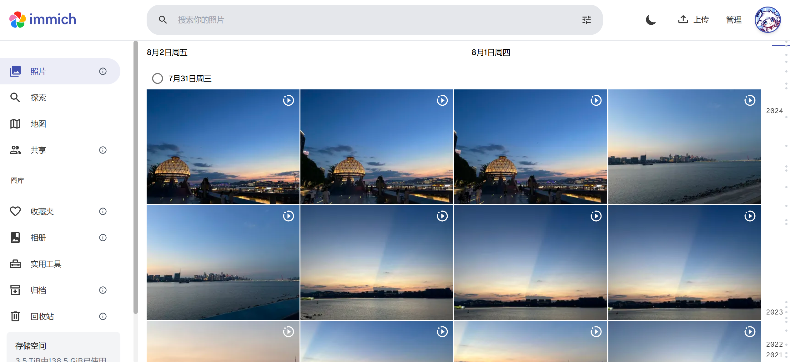
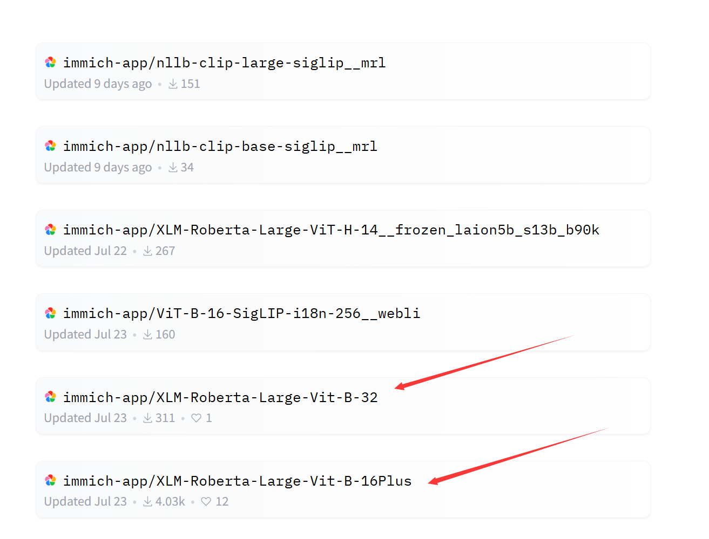
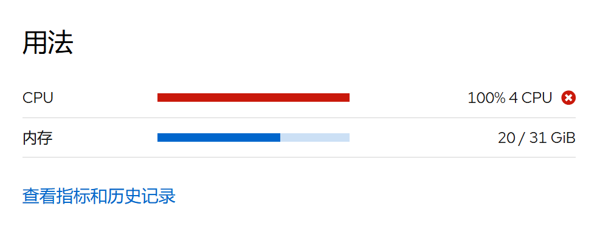
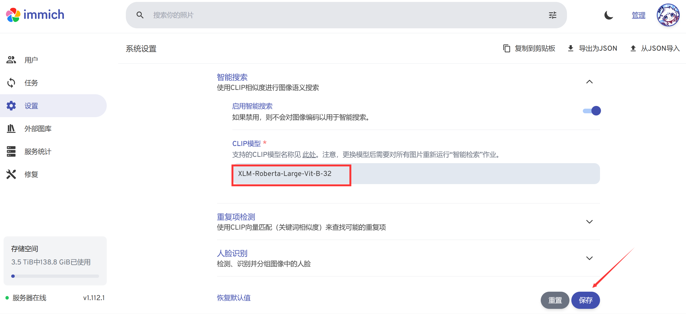
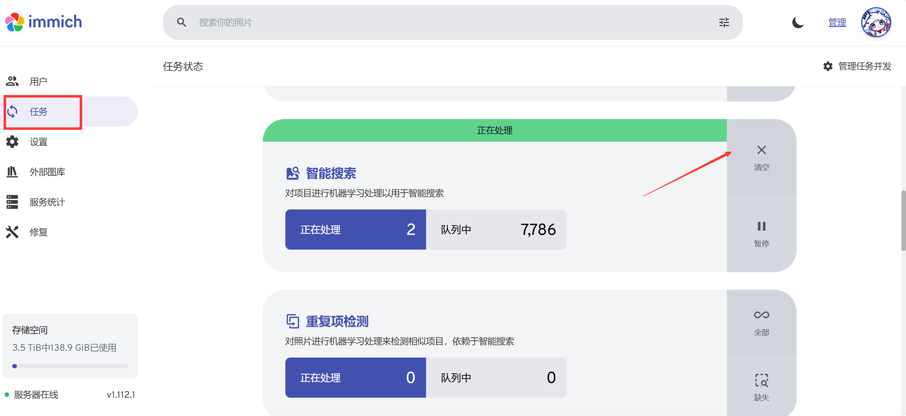
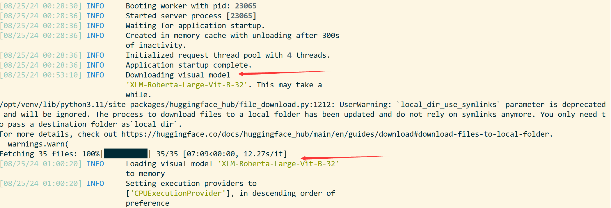
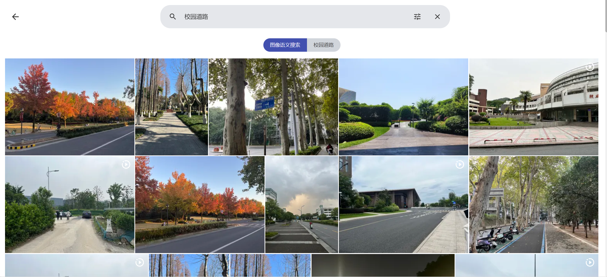
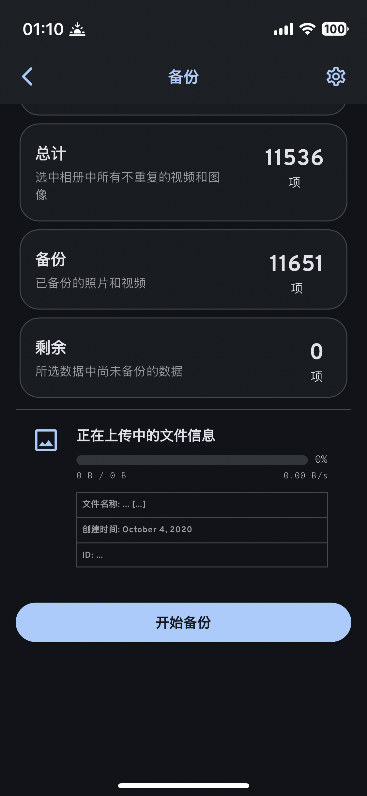

NAS（12）—— Immich 照片管理
概述
Immich 是一个直接从 iPhone、Android 手机上备份照片与视频的开源解决方案，通过部署在自己的电脑、NAS、服务器中，使用 App 进行备份。界面酷似 Google Photos，支持多用户、照片和相册分享、好友上传、地理位置、机器学习识别事件等功能。是居家备份照片的好帮手。

通过 Docker 部署
使用 Docker Compose：
进入部署文件夹，下载docker-compose.yml文件：
1 | wget -O docker-compose.yml https://github.com/immich-app/immich/releases/latest/download/docker-compose.yml |
下载.env文件：
1 | wget -O .env https://github.com/immich-app/immich/releases/latest/download/example.env |
（可选）下载hwaccel.transcoding.yml文件：
1 | wget -O hwaccel.transcoding.yml https://github.com/immich-app/immich/releases/latest/download/hwaccel.transcoding.yml |
（可选）下载hwaccel.ml.yml文件：
1 | wget -O hwaccel.ml.yml https://github.com/immich-app/immich/releases/latest/download/hwaccel.ml.yml |
根据实际情况更改.env文件：
1 | # You can find documentation for all the supported env variables at https://immich.app/docs/install/environment-variables |
输入如下命令启动 Immich：
1 | sudo docker compose up -d |
Immich 镜像拉取建议使用科学上网服务。
若要更新 Immich，请输入以下命令：
1 | sudo docker compose pull && sudo docker compose up -d |
配置
NAS 端
机器学习模型
Immich 是支持使用描述文字搜索图片的，但默认的机器学习模型是 ViT-B-32__openai，这个模型并不支持中文。好在官方提供的模型中，有一个 XLM-Roberta-Large-Vit-B-16Plus 可以使用中文搜索。

当然也可以使用 XLM-Roberta-Large-Vit-B-32，但空间占用与处理时的 CPU 占用都会更高。

可以前往 Immich 的官方文档查看各模型对于某语言的响应情况。
如果 NAS 能够使用代理，我们直接前往 Immich 的管理 - 设置 - 机器学习设置 - 智能搜索 - CLIP 模型处修改 CLIP 模型名称。

修改完成后，点击左侧任务一栏，找到智能搜索一项，点击全部。Immich 会先下载对应的模型，再对所有的图片进行机器学习处理。

我们可以在 Cockpit 的终端处查看 Docker 日志，确认模型下载与运行情况：
1 | sudo docker logs immich_machine_learning |

可以看到，我们已经成功下载了对应的 CLIP 模型。
如果 NAS 不能使用代理，我们需要先在其他设备上下载对应的 CLIP 模型，再放入 Immich 机器学习的对应文件夹中。具体步骤此处不详述，可参见这篇文章。
处理完成后，我们尝试使用中文进行语义搜索，结果非常完美。

客户端
手机端应用的配置非常简洁明了，这里就不详述了，主要用到的功能为备份功能。

剩下的功能，就留给各位去探索吧！
下一章节：Navidrome + MusicTag 音乐管理